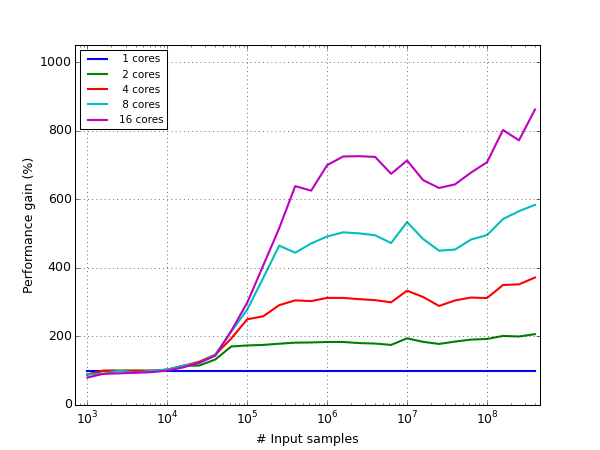
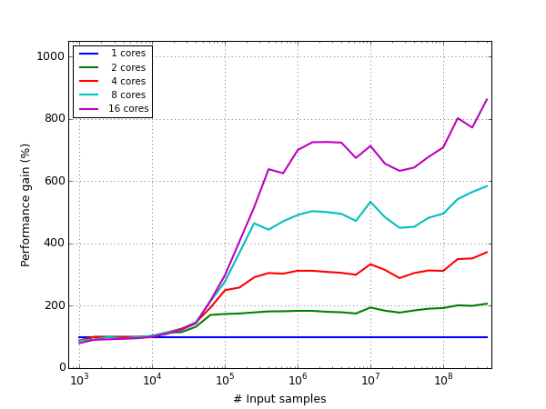

Cygrid user manual¶
Introduction¶
Cygrid allows to resample a number of spectra (or data points) to a regular
grid - a data cube - using any valid astronomical FITS/WCS projection (see
wcs). The method is a based on serialized convolution with finite
gridding kernels. Currently, only Gaussian (radial-symmetric or elliptical)
kernels are provided (which has the drawback of slight degradation of the
effective resolution). The algorithm has very small memory footprint, allows
easy parallelization, and is very fast.
Cygrid is already used in several “production” systems, for example it was utilized for two major 21-cm HI surveys, EBHIS and HI4PI. Nevertheless, we cannot guarantee that it’s completely bug-free. We kindly invite you to use the library and we are grateful for feedback. Note, that work on the documentation is still ongoing.
The cygrid package is available for Linux, Windows, and MacOS operating
systems. To improve computation speed, the OpenMP technology is used. Therefore, a suitable C++ compiler must
be installed on your system, if you build from source. For convenience, we
also provide packages for the Anaconda Python distribution.
Data gridding¶
Gridding data is a ubiquitous task in many scientific applications, for
example to make maps from measured raw data sets in astronomy or geographic
information systems (GIS). Therefore, it is not surprising that also the
popular scipy library provides a function, griddata,
which can be used for this purpose:
# Example adapted from "scipy.interpolate.griddata" docs
import numpy as np
import matplotlib.pyplot as plt
from scipy.interpolate import griddata
def func(x, y):
return (
x * (1 - x) *
np.cos(4 * np.pi * x) *
np.sin(4 * np.pi * y ** 2) ** 2
)
grid_x, grid_y = np.mgrid[0:1:100j, 0:1:200j]
# generate some data
points = np.random.rand(1000, 2)
values = func(points[:,0], points[:,1])
gridded = griddata(
points,
values,
(grid_x, grid_y),
method='cubic'
)
fig, (ax1, ax2) = plt.subplots(1, 2, figsize=(12, 6))
ax1.imshow(
func(grid_x, grid_y).T,
extent=(0,1,0,1), origin='lower'
)
ax1.plot(points[:,0], points[:,1], 'k.', ms=1)
ax1.set_title('Original')
ax2.imshow(gridded.T, extent=(0,1,0,1), origin='lower')
ax2.set_title('Cubic interpolation')
plt.show()
(Source code, png, hires.png, pdf)
{kind=link}
{kind=link}
The points in the left panel show the positions, where the underlying
function was sampled. As can be seen in the right panel,
griddata does a good job in estimating the function
values (on a regular grid) from these irregularly sampled points.
But what happens, if we add noise to the sampled data? Obviously, the gridded
data will somehow be affected by the decreased signal-to-noise ratio and may
not be a good description of the original (noise-free) function anymore. One
possible counter could be to sample (aka observe) the function at more
positions, because this should increase the signal-to-noise ratio in the
gridded map. Unfortunately, the griddata algorithm
doesn’t work this way:
# generate some data
sigma = 0.01 # or 0.1
nsize = 1000 # or 100000
points = np.random.rand(nsize, 2)
noise = np.random.normal(0, sigma, nsize)
values = func(points[:,0], points[:,1]) + noise
grid_and_plot(...)
(Source code, png, hires.png, pdf)
{kind=link}
{kind=link}
With a significantly small number of samples or too much noise (e.g., lower
left panel), the gridded data is a very bad representation of the underlying
function. But even with a large input sample size, the
griddata algorithm produces strange outliers in the
gridded map (bottom right panel), but at least one can still see traces of the
original function.
Convolution based gridding¶
One gridding algorithm, which does a better job at this, is so-called convolutional gridding. The idea behind this method is relatively simple. The raw data samples (which are located at irregular coordinates) are convolved with a kernel function, and then the result is computed at the position of the pixel centers of the desired regular grid cells. If a Gaussian is used as kernel, one can safe a lot of computing time, because each raw data sample will only influence the output grid cells in within a certain sphere around the raw-sample position.
Mathematically, this approach can be described by the following formula:
where:
is called the weight map.
Here, \(R_n [s]\) and \(R_{i,j}[s]\) are two different representations of the true signal \(s\). The index \(n\) runs over the list of all input samples, with respective coordinates \((\alpha_n,\delta_n)\), while the regular output grid can be parametrized via pixel coordinates \((i,j)\) with associated world coordinates \((\alpha_{i,j}, \delta_{i,j})\). The value of the weighting kernel \(w\) depends only on the input and output coordinates. In most cases a radially symmetric kernel is applied, such that:
with the distance \(\mathcal{D}\) between a pixel center world coordinate, \((\alpha_{i,j}, \delta_{i,j})\), and the \(n\)-th input coordinate, \((\alpha_n,\delta_n)\).
Since once usually doesn’t want to keep all raw data samples in memory, we use
two helper maps. While we iterate over the samples (sum over \(n\)), we
compute the products \(R_n[s](\alpha_n,\delta_n)w(\alpha_{i,j},\delta_{i,
j};\alpha_n,\delta_n)\) for all pixels \((i, j)\) within a sphere around
the \((\alpha_n,\delta_n)\) position, and add them to an empty array
A[i,j], which can be identified with \(R_{i,j}[s]\cdot W_{i,j}\).
Simultaneously, we do the same for the weighting factors and add these to
another array B[i,j] aka the weight map, \(W_{i,j}\). When all raw data
samples have been processed, the two resulting arrays are divided (A[i,j] /
B[i,j]), which gives \(R_{i,j}\).
Note
In fact, cygrid follows a slightly different approach internally,
caching some intermediary values, to allow multi-threaded processing. For
details, please see the Cygrid paper.
Note
In one of our Jupyter tutorial notebooks we made an animation that demonstrates how the algorithm works step-by-step.
The cygrid algorithm¶
The great advantage of the approach described above, is, that it can be straightforwardly applied to spherical geometry, which is necessary for map making in geographic information systems and astronomy. The sampled coordinates are often the longitude and latitude on a sphere, while one wants to display the map in rectangular coordinates. Therefore, a certain map projections has to be specified, as well.
However, there are libraries to easily convert between the world coordinates
(longitude and latitude) and pixel coordinates (\(i\) and \(j\)), such
as wcs. Then one only needs to use the true-angular distance
function instead instead of the simple Cartesian distance and the above
formulas can be applied.
Of course, in practice there is a little bit more to it. One has to deal with edge effects and the double-sum over all \(n\) and \((i, j)\) is a deal breaker for non-trivial map sizes. One can use a kernel function with finite support, though, and restrict the summation to those input samples \(n\) that contribute significantly to \((i, j)\) (in spherical coordinates, it is not an easy task to identify pixels within a certain sphere!). On top of that, cygrid uses some clever cashing techniques and can profit from multi-core CPUs to further increase the computational speed of the gridding process. For details, we refer to the Cygrid paper.
Comparison with scipy.griddata¶
After reading all of the above, you’re now probably curious, how cygrid
compares to griddata. Here is the result:
(Source code, png, hires.png, pdf)
{kind=link}
{kind=link}
We think, it is fair to say that cygrid produces much better result
for these complicated situations.
Note
Here we have made the approximation, that the input coordinates (ranging from 0 to 1 are in angles on the sphere (in degrees), and not the linear Cartesian coordinates. However, for small angles the distortion is negligible.)
Angular resolution¶
Because cygrid is based on convolution with a (typically) Gaussian kernel,
the effective angular resolution of the data is degraded:
where \(\sigma_\mathrm{out}\) is the standard deviation of the resulting
effective beam width (given it’s Gaussian), \(\sigma_\mathrm{in}\) is the
width of the input beam, and \(\sigma_{k}\) is the width of the kernel.
Therefore, cygrid may not be the first choice if it comes to the task of
re-projecting data (see How does cygrid compare to re-projection?).
Note
One can convert between the standard-deviation width and the FWHM via \(\sigma = \mathrm{FWHM} / \sqrt{8\ln2}\).
A good practical compromise is often to let the kernel be about half the size of the input resolution, because then the resulting resolution is only degraded by about 10%.
There are several additional considerations, which play a role. The kernel
must not be too narrow, especially if the input data are not sufficiently
densely sampled. Each raw data sample can only “reach” output grid pixels
that are well within an angular distance of \(<3\sigma_k\). Furthermore,
the output pixel grid must be fine enough to warrant full sampling of the
output signal: \(\Delta p\lesssim\mathrm{FWHM}_\mathrm{out}/2\sqrt{2}=\sigma_\mathrm{out}/\sqrt{\ln2}\).
We’d even recommend to chose the output grid such that
\(\Delta p\lesssim\mathrm{FWHM}_k/2\sqrt{2}=\sigma_k/\sqrt{\ln2}\).
This is because for performance reasons cygrid does compute the kernel
function values only for the pixel centers, and doesn’t perform numerical
integration over the pixel area. Of course, this leads to a certain numerical
inaccuracy, but if the output pixel grid supports full sampling of the kernel,
the errors are on an acceptable level. For further details we refer to
the Cygrid paper.
Under some circumstances, the decrease in angular resolution is even desirable. If one wants to compare two data sets with different angular resolution, it is possible to smooth the higher-resolution data to the lower-resolution map by choosing \(\sigma_k^2=\sigma_\mathrm{low}^2 - \sigma_\mathrm{high}^2\).
Kernel parameters¶
Apart from choosing a proper kernel size (see
Angular resolution), one can use three different weighting
functions, gauss1d, gauss2d, and tapered_sinc. Despite its name,
gauss1d refers to a two-dimensional radial-symmetric Gaussian - in
contrast to gauss2d, which is for an elliptical 2D Gaussian. More
information, e.g., which parameters are required for each of the three
functions, can be found in the set_kernel method
documentation.
There are two other necessary parameters, to be provided to the
set_kernel method: the kernel sphere radius (or support
radius) and the resolution of the internally used HEALPix grid. The sphere radius should be
\(3\ldots5\sigma_k\) depending on the desired accuracy. As the area of a
sphere goes with radius squared, using \(5\sigma_k\) will take roughly
three times longer. The internally HPX resolution defines only some details
of the used caches. A good value for this is \(\sigma_k/2\).
Simple gridding tasks¶
Using cygrid consists of four main steps:
Reading the raw data,
Defining the output coordinate system and frame (by means of
wcs),Setting up the gridder, i.e., the kernel parameters with
set_kernel,Feed the raw data into the gridder with the
gridmethod.
In the following, we will explain in more detail, how each of the steps works.
As cygrid doesn’t ship with a large raw data set that could be read-in,
we will simply create a mock data set, with the help of a utility function,
produce_mock_data:
>>> import numpy as np
>>> import cygrid
>>> from astropy.utils.misc import NumpyRNGContext
>>> mapcenter = 60., 30. # all in degrees
>>> mapsize = 5., 5.
>>> beamsize_fwhm = 0.1
>>> num_samples = 10 ** 6
>>> num_sources = 20
>>> # see cygrid's manual for a description of the produce_mock_data function
>>> with NumpyRNGContext(1):
... lons, lats, signal = cygrid.produce_mock_data(
... mapcenter, mapsize, beamsize_fwhm, num_samples, num_sources
... )
>>> np.set_printoptions(precision=4)
>>> if np.__version__ >= '1.14':
... np.set_printoptions(legacy='1.13')
>>> print(lons)
[59.473 61.3992 56.8253 ..., 59.957 57.5156 59.176 ]
>>> print(lats)
[28.0106 31.0641 30.3142 ..., 28.5785 32.1307 28.8626]
>>> print(signal)
[ 0.0856 1.1899 -0.3375 ..., 1.7997 -0.5739 0.0358]
Note
With the NumpyRNGContext context, it is possible
to specify the seed for all NumPy random numbers.
The next step is to define a FITS/WCS compatible header that
defines the image into which we want to grid the data:
>>> # define target grid (via FITS header according to WCS convention)
>>> # a good pixel size is a third of the FWHM of the PSF (avoids aliasing)
>>> pixsize = beamsize_fwhm / 3.
>>> dnaxis1 = int(mapsize[0] / pixsize)
>>> dnaxis2 = int(mapsize[1] / pixsize)
>>> target_header = {
... 'NAXIS': 2,
... 'NAXIS1': dnaxis1,
... 'NAXIS2': dnaxis2,
... 'CTYPE1': 'RA---SIN',
... 'CTYPE2': 'DEC--SIN',
... 'CUNIT1': 'deg',
... 'CUNIT2': 'deg',
... 'CDELT1': -pixsize,
... 'CDELT2': pixsize,
... 'CRPIX1': dnaxis1 / 2.,
... 'CRPIX2': dnaxis2 / 2.,
... 'CRVAL1': mapcenter[0],
... 'CRVAL2': mapcenter[1],
... }
This header can be put into the WcsGrid constructor, which is
the Class that has to be used for this kind of image gridding:
>>> gridder = cygrid.WcsGrid(target_header)
Before the gridder is ready to use, one needs to setup the kernel parameters (see also Kernel parameters):
>>> kernelsize_fwhm = 0.05 # degrees; beam / 2
>>> kernelsize_sigma = kernelsize_fwhm / np.sqrt(8 * np.log(2))
>>> sphere_radius = 3. * kernelsize_sigma
>>> kernel_args = (
... 'gauss1d',
... (kernelsize_sigma,),
... sphere_radius,
... kernelsize_sigma / 2.
... )
>>> gridder.set_kernel(*kernel_args)
Finally, we call the grid method, into which the raw data
is fed:
>>> gridder.grid(lons, lats, signal)
The result can be queried using the get_datacube method:
>>> gridded_data = gridder.get_datacube()
>>> print(gridded_data)
[[ 0.046 -0.0528 0.0258 ..., 0.0111 0.0489 0.1099]
[ 0.0432 -0.0907 -0.0964 ..., -0.0131 -0.0469 -0.0357]
[ 0.0287 -0.0611 -0.0609 ..., -0.0082 -0.0261 -0.0367]
...,
[-0.0321 -0.0177 -0.0347 ..., -0.007 0.1138 0.0903]
[-0.1197 -0.0649 -0.0861 ..., -0.0276 0.0781 0.0664]
[-0.0828 -0.0677 -0.0645 ..., 0.1029 0.1179 0.0946]]
>>> print(gridded_data.shape)
(150, 150)
Note
We follow the standard convention, that the data cube axes are ordered
as: (z, y, x) (for 3D) or (y, x) (for 2D), etc.
For many use cases, you will want to save your image to FITS:
>>> from astropy.io import fits
>>> fits.writeto('example.fits', header=target_header, data=gridded_data)
We can also plot the result, using the wcsaxes
package (for convenience, we provide the full script):
import numpy as np
import matplotlib.pyplot as plt
from astropy.wcs import WCS
from astropy.utils.misc import NumpyRNGContext
import cygrid
mapcenter = 60., 30. # all in degrees
mapsize = 5., 5.
beamsize_fwhm = 0.1
num_samples = 10 ** 6
num_sources = 20
with NumpyRNGContext(1):
lons, lats, signal = cygrid.produce_mock_data(
mapcenter, mapsize, beamsize_fwhm, num_samples, num_sources
)
pixsize = beamsize_fwhm / 3.
dnaxis1 = int(mapsize[0] / pixsize)
dnaxis2 = int(mapsize[1] / pixsize)
target_header = {
'NAXIS': 2,
'NAXIS1': dnaxis1,
'NAXIS2': dnaxis2,
'CTYPE1': 'RA---SIN',
'CTYPE2': 'DEC--SIN',
'CUNIT1': 'deg',
'CUNIT2': 'deg',
'CDELT1': -pixsize,
'CDELT2': pixsize,
'CRPIX1': dnaxis1 / 2.,
'CRPIX2': dnaxis2 / 2.,
'CRVAL1': mapcenter[0],
'CRVAL2': mapcenter[1],
}
gridder = cygrid.WcsGrid(target_header)
kernelsize_fwhm = 2.5 / 60. # degrees
kernelsize_sigma = kernelsize_fwhm / np.log(8 * np.sqrt(2))
sphere_radius = 3. * kernelsize_sigma
gridder.set_kernel(
'gauss1d',
(kernelsize_sigma,),
sphere_radius,
kernelsize_sigma / 2.
)
gridder.grid(lons, lats, signal)
gridded_map = gridder.get_datacube()
target_wcs = gridder.get_wcs()
fig = plt.figure(figsize=(7, 7))
ax = fig.add_subplot(111, projection=target_wcs.celestial)
im = ax.imshow(
gridded_map, vmin=-0.5, vmax=8.0,
origin='lower', interpolation='nearest'
)
lon, lat = ax.coords
lon.set_axislabel('R.A. [deg]')
lat.set_axislabel('Dec [deg]')
plt.show()
(Source code, png, hires.png, pdf)
{kind=link}
{kind=link}

Note
If you use imshow for plotting, you need the
origin='lower' option to ensure that the result is not vertically
flipped. Also we recommend to use interpolation='nearest' to avoid
additional interpolation of the result by imshow.
Gridding spectral data¶
Originally, cygrid was developed to grid spectral data. This is also the
reason, why internally, everything is treated as if a spectral axis was
present. As shown in the simple example above, the user interface
works for pure 2D maps in the same way, but under the hood cygrid
adds a redundant spectral axis of length One. In fact, if the data to be
gridded has even more dimensions, cygrid will internally reshape the
work arrays to 3D and after the gridding has finished restore the desired
higher-dimensional shape, to make it easy for the user.
To handle spectral data, one can still use a 2D FITS image header, or any FITS header, as long as it contains an appropriate spatial description of the target map/cube.:
>>> gridder = cygrid.WcsGrid(target_header)
>>> gridder.set_kernel(*kernel_args)
We can test this, by concatenating the signal and negative copy of it:
>>> gridder.grid(lons, lats, np.column_stack([signal, -signal]))
>>> print(gridder.get_datacube().shape)
(2, 150, 150)
Likewise, any other dimension is possible, as long as the first axis is compatible with the length of the coordinate arrays:
>>> gridder = cygrid.WcsGrid(target_header)
>>> gridder.set_kernel(*kernel_args)
>>> signal_3d = np.column_stack([
... signal ** n for n in range(6)
... ]).reshape((-1, 3, 2))
>>> gridder.grid(lons, lats, signal_3d)
>>> print(gridder.get_datacube().shape)
(3, 2, 150, 150)
As can be seen, the datacube shape is constructed from the shape of the input raw data (signal) and the target map size in the following manner: the first axes are defined by the shape of the input signal (excluding the first dimension), while the last axes are given by the target pixel array ( i.e. map) shape.
How does cygrid compare to re-projection?¶
Sometimes one already has a set of gridded data but wants to convert it to
another coordinate system or frame/projection. For this, the reproject
package is probably better suited, as
it allows to do it without the loss of angular resolution discussed in :ref
:angular-resolution-label. However, that doesn’t mean that cygrid isn’t
able to do it. Suppose you have some Planck satellite data of M31 in
equatorial coordinates and want to over-plot an image of the HI as observed by
EBHIS,
which perhaps you have in galactic coordinates, only. To show how this
works, we’ll query some example data from NASA SkyView with the help of
the awesome astroquery package.:
from astropy import units as u
from astropy.utils.data import conf
from astroquery.skyview import SkyView
# Loading data from SkyView can take a while, hence the longer timeout
conf.remote_timeout = 60.
kwargs = dict(
radius=3 * u.deg,
pixels='500',
scaling='Linear',
)
paths = SkyView().get_images(
position='10.68471 +41.26875',
coordinates='J2000', survey=['Planck 857'], **kwargs
) # doctest: +ELLIPSIS
planck_header, planck_data = paths[0][0].header, paths[0][0].data
paths = SkyView().get_images(
position='121.174322 -21.573311',
coordinates='Galactic', survey=['EBHIS'], **kwargs
) # doctest: +ELLIPSIS
ebhis_header, ebhis_data = paths[0][0].header, paths[0][0].data
Let’s plot the two maps:
from astropy.wcs import WCS
import matplotlib.pyplot as plt
planck_wcs, ebhis_wcs = WCS(planck_header), WCS(ebhis_header)
fig = plt.figure(figsize=(12, 6))
ax1 = fig.add_subplot(1,2,1, projection=planck_wcs)
ax1.imshow(planck_data, origin='lower')
ax1.set_title('Planck 857 GHz')
ax1.coords['ra'].set_axislabel('Right Ascension')
ax1.coords['dec'].set_axislabel('Declination')
ax2 = fig.add_subplot(1,2,2, projection=ebhis_wcs)
ax2.imshow(ebhis_data, origin='lower')
ax2.set_title('EBHIS 21-cm HI line')
ax2.coords['glon'].set_axislabel('Galactic Longitude')
ax2.coords['glat'].set_axislabel('Galactic Latitude')
ax2.coords['glat'].set_axislabel_position('r')
ax2.coords['glat'].set_ticklabel_position('r')
Before the data can be re-gridded, we need to extract the world coordinates of the EBHIS FITS header and convert them to the equatorial system:
import numpy as np
from astropy.coordinates import SkyCoord
ebhis_glon_pix, ebhis_glat_pix = np.meshgrid(
np.arange(ebhis_header['NAXIS1']),
np.arange(ebhis_header['NAXIS2'])
)
ebhis_lon_world, ebhis_lat_world = ebhis_wcs.all_pix2world(
ebhis_glon_pix, ebhis_glat_pix, 0
)
ebhis_coords_gal = SkyCoord(
ebhis_lon_world, ebhis_lat_world, frame='galactic', unit='deg'
)
ebhis_coords_eq = ebhis_coords_gal.icrs
This seems a bit messy, but if you need this often, just put it into a
function. We can now set-up WcsGrid and put the EBHIS data
into the grid method, as usual:
import cygrid
gridder = cygrid.WcsGrid(planck_header)
# EBHIS resolution is 10.8', but image is strongly oversampled, so we use
# a kernel of 0.012 (twice the pixel size)
kernelsize_fwhm = 0.012
kernelsize_sigma = kernelsize_fwhm / np.log(8 * np.sqrt(2))
sphere_radius = 4. * kernelsize_sigma
gridder.set_kernel(
'gauss1d',
(kernelsize_sigma,),
sphere_radius,
kernelsize_sigma / 2.
)
gridder.grid(
ebhis_coords_eq.ra.value.flatten(),
ebhis_coords_eq.dec.value.flatten(),
ebhis_data.flatten()
)
ebhis_data_regridded = gridder.get_datacube()
By coincidence, only a slight rotation was necessary, which is why only few blank pixels are visible at the edges. For convenience, we also show, how to do the same with the reproject package:
from reproject import reproject_interp
ebhis_data_reprojected, footprint = reproject_interp(
(ebhis_data, ebhis_header), planck_header
)
This seems much easier than the cygrid approach, though very similar steps
are necessary (they are just encapsulated in the function). The cygrid
interface is more low-level in that sense, but this allows much more
customization. One common use case would be to smooth the Planck satellite
map to the EBHIS angular resolution, for example, which would all certain
kinds of analyses, e.g., to compare the flux density per pixel of the two data
sets. For the sake of completeness, here are the resulting plots:
Advanced gridding tasks¶
Sight-line gridding¶
Certainly a less common use case is to employ cygrid to grid a data set to
a list of (irregular) coordinates - which makes only sense for true data
gridding (and not re-projecting data) or if one needs to change the angular
resolution (down-sampling). Another use case would be to create a HEALPix map
from a large raw data set. The cygrid sight-line gridder can do all of
that, which is demonstrated in this notebook.
Here, we explain the interface of the SlGrid class. Gridding
consists of the same four steps explained in Simple gridding tasks, but
instead of providing a FITS header, one feeds a list of target coordinate
pairs to the constructor:
>>> import numpy as np
>>> import cygrid
>>> from astropy.utils.misc import NumpyRNGContext
>>> mapcenter = 60., 30. # all in degrees
>>> mapsize = 5., 5.
>>> beamsize_fwhm = 0.1
>>> num_samples = 10 ** 6
>>> num_sources = 20
>>> # see cygrid's manual for a description of the produce_mock_data function
>>> with NumpyRNGContext(1):
... lons, lats, signal = cygrid.produce_mock_data(
... mapcenter, mapsize, beamsize_fwhm, num_samples, num_sources
... )
>>> target_lons = np.array([61., 59.1, 62.7])
>>> target_lats = np.array([28., 30.6, 29.5])
>>> gridder = cygrid.SlGrid(target_lons, target_lats)
>>> kernelsize_fwhm = 0.05
>>> kernelsize_sigma = kernelsize_fwhm / np.log(8 * np.sqrt(2))
>>> sphere_radius = 3. * kernelsize_sigma
>>> gridder.set_kernel(
... 'gauss1d',
... (kernelsize_sigma,),
... sphere_radius,
... kernelsize_sigma / 2.
... )
>>> gridder.grid(lons, lats, signal)
>>> gridded_sightlines = gridder.get_datacube()
>>> print(
... 'lon lat sightline-value\n',
... '\n'.join(
... '{:4.1f} {:4.1f} {:6.3f}'.format(*t)
... for t in zip(target_lons, target_lats, gridded_sightlines)
... ))
lon lat sightline-value
61.0 28.0 -0.117
59.1 30.6 0.159
62.7 29.5 -0.099
Decrease memory footprint¶
If you have very large raw data sets (e.g., spectral data), chances are high
that you can’t load them all to your computer’s memory and feed them into the
grid method in one call. However, cygrid was designed to
allow serial data processing, which means one can repeatedly call
grid with different chunks of data and they all get gridded
to the output datacube:
# set-up target map/datacube
mygridder = cygrid.WcsGrid(header)
mygridder.set_kernel(...)
for chunk in chunks:
# user needs to handle reading the data per chunk
lon, lat, rawdata = get_data(chunk)
mygridder.grid(lon, lat, rawdata)
data_cube = mygridder.get_datacube()
With this approach, we were able to process the HI4PI survey, which is several tens of Tbytes of raw data and grid that into a full-sky data cube (about 30 GBytes) in few hours. For this task one still needs a potent workstation (128 GB RAM), but this is due to the large output data cube size.
To speed-up processing, cygrid uses internal caches (see Cygrid paper
for details). This is usually a minor contribution to the total memory usage,
but there could be scenarios, e.g., when one grids into very large maps having
very small pixel sizes, that the internal cache grows too much. In this case,
we recommend to sort the input data by latitude, grid the data in chunks, and
call clear_cache every now and then. (Please follow this
recipe only, if you’re sure that the internal cache is your problem.)
The same approach can also help, if you have rather large gridding kernels,
which have sizes of several hundreds or more pixels in the target map (e.g.,
when you aim for relatively strong smoothing of the data).
Elliptical gridding kernels¶
It is also possible to use an elliptical 2D Gaussian kernel, which can be
useful, if one wants to smooth interferometric data (often having elliptical
beams) to a spherical effective angular resolution. One simply has to
choose an appropriate option in the set_kernel method,
e.g.:
>>> beam_maj, beam_min, beam_PA = 0.2, 0.1, 30.
>>> desired_resolution = 0.25
>>> k_fwhm_maj = np.sqrt(desired_resolution ** 2 - beam_maj ** 2)
>>> k_fwhm_min = np.sqrt(desired_resolution ** 2 - beam_min ** 2)
>>> print('{:.3f} {:.3f}'.format(k_fwhm_maj, k_fwhm_min))
0.150 0.229
>>> fwhm_to_sigma = 1 / np.sqrt(8 * np.log(2))
>>> k_maj, k_min = k_fwhm_maj * fwhm_to_sigma, k_fwhm_min * fwhm_to_sigma
>>> sphere_radius = 3 * k_maj # choose major kernel size
>>> internal_hpx_res = 0.5 * k_min # choose minor kernel size
>>> gridder.set_kernel(
... 'gauss2d',
... (k_maj, k_min, beam_PA),
... sphere_radius,
... internal_hpx_res
... )
The beam_PA is the parallactic angle of the beam. It is non-trivial, to
treat this properly, especially on the sphere. For the Cygrid paper we made
a nice example plot, which demonstrates this:

Benchmarking¶
From the beginning, cygrid was designed with performance in mind. The
algorithm can be run on parallel threads, which allows us to profit from
multi-core CPUs. However, much of the speed comes from applying clever methods
to avoid unnecessary computations. One example is a fast cached approach to
find the relevant map pixels around each raw-data sample position.
We did several tests to benchmark cygrid, in which we vary the number of
raw data samples or the target map size, and repeat for different numbers of
CPU cores. The resulting processing speed is compared vs. the
griddata function, which serves as a baseline
(although, the griddata function is not really useful
for many potential tasks that cygrid can solve, it can be assumed that it
is optimized for speed).
The following figure shows the processing times for a
\(5^\circ\times5^\circ\) target map. For spectral data (with many spectral
channels), running the gridder is mostly limited by the IO speed with which
the data can be read from disk. To estimate the influence of the convolution
with the kernel, a single-valued signal is gridded (aka a continuum map). The
test was repeated for different number of input samples (uniformly distributed
over the map), ranging from 1000 to 400 billion(!). The width of the gridding
kernel was \(\vartheta_\mathrm{fwhm} = 300''\), the map pixel size was
\(200''\). Below about 200 thousand samples, cygrid was considerably
slower than griddata (with “linear” or “cubic”
interpolation method), because there is overhead involved with the
construction of the internal caches. Beyond this point, and especially, when
running cygrid on a multi-core CPU, way faster (more than an order of
magnitude with 16 cores). Furthermore, with “linear” and “cubic”
interpolation, griddata is limited to 16.7 million
samples. The “nearest neighbor” method is faster than cygrid (single-core),
but on a dual-core cygrid is competitive, and much faster on quad-cores
(once 10+ million samples are gridded).
{kind=link}
The speed gain for multi-core CPUs is only kicking in once a certain number of samples is involved, but unfortunately it is not linear with the number of cores:

As can be seen, for a 16-core CPU, the speed gain is only about 8-fold (still, for this example, 400 billion samples were finished after only 300 seconds).
In a second, more challenging test, we changed the target field size (from \(0.1^\circ\times0.1^\circ\) to \(60^\circ\times60^\circ\)). At the same time we increased the number of input samples, such that a constant density of 100 thousand samples per square degrees was maintained:
 

{kind=link}
See Also¶
Cygrid paper: B. Winkel, D. Lenz & L. Flöer: Cygrid: A fast Cython-powered convolution-based gridding module for Python, Astronomy & Astrophysics, Volume 591, A 12, 2016.
HEALPix paper: K. M. Górski, E. Hivon, A. J. Banday, B. D. Wandelt, F. K. Hansen, M. Reinecke, M. Bartelmann: HEALPix: A Framework for High-Resolution Discretization and Fast Analysis of Data Distributed on the Sphere, The Astrophysical Journal, Volume 622, Issue 2, 2005.
WCSlib paper I: E. W. Greisen & M. R. Calabretta: Representations of world coordinates in FITS, Astronomy & Astrophysics, Volume 395, p.1061, 2002.
WCSlib paper II: M. R. Calabretta & E. W. Greisen: Representations of celestial coordinates in FITS, Astronomy & Astrophysics, Volume 395, p.1077, 2002.
Astropy World Coodinate System package, which is used extensively in cygrid.
Reference/API¶
cygrid Package¶
Functions¶
|
Compute HEALPix |
|
Compute HEALPix |
|
Produce mock raw data (including coordinate pairs) for testing. |
|
Run the tests for the package. |
Classes¶
|
Fast Cython-powered gridding software, base class. |
|
Helper class for HEALPix operations. |
|
Helper class for creating cygrid’s lookup tables (HEALPix). |
This exception is for mismatches of WCS header and actual data cube sizes or input data sizes. |
|
Sight line version of |
|
WCS version of |